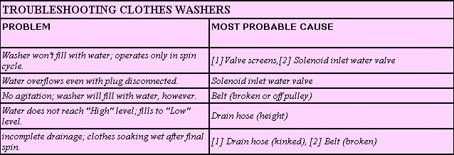
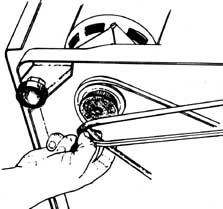
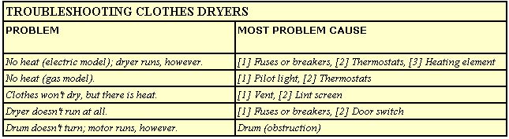
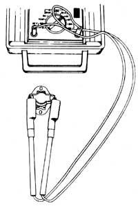
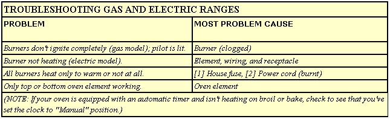
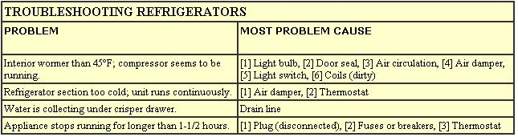
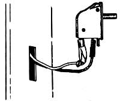
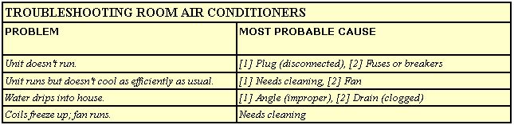
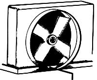
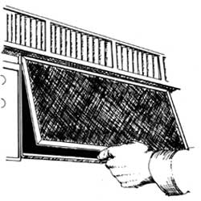

For those who prefer not to become best buddies with the repairperson, here's a primer on ...
CLOTHES WASHERS
CLOTHES DRYERS
GAS AND ELECTRIC RANGES
REFRIGERATORS
AIR CONDITIONER
There comes a time in every consumer's life when that not-so-trusty old washer, dryer, stove, refrigerator, or air conditioner breaks down just once too often. The event is sure to take place when your monthly bills have already piled sky-high and there isn't enough money on hand to even think about paying for a new appliance or, for that matter, repairs.
Chances are, though, that there is another way out of this apparently bleak situation: You can probably fix the appliance yourself. True, some problems require the skills of a trained repairperson ... but such maladies are actually fairly uncommon. Most service technicians agree that a good share of their house calls are for minor malfunctions that customers could have corrected themselves. The secret to most appliance repairs is simply knowing how to pinpoint the trouble. Nine times out of ten, the cure itself is easy enough to carry out.
This article is intended as a diagnostic and treatment guide to situations that virtually anyone, regardless of his or her mechanical know-how, can successfully handle. (We'll assume that major components such as electric motors or compressors are in good working order.) If you encounter a malfunction that isn't mentioned here, or if your machine is still acting up after you check out the possible problems and solutions we offer, then it may be time to call in an expert. You should also consult with a technician if you have to replace a part that you're not really sure you can install. Remember, too, that electrical components can't be returned once purchased ... so before rushing out to the store to buy one, be sure the part you think you need really is the part you need.
READY, SET . . .
Any attempt at a do-it-yourself service call should begin with a thorough inspection of the machine involved. Although appliance manufacturers use most of the same basic components in their products, each routinely "brands" its models by locating the parts differently than its competitors. So it's important to familiarize yourself with the model at hand, even if you've worked on similar household helpers before. And do take time to read your owner's manual. Along with other helpful information, it'll probably contain a detailed diagram to help you find the appliance's various parts.
Of course, if the machine isn't running at all, the first thing you should do is make sure it's plugged in properly ... and then check for blown fuses or tripped circuit breakers.
If all seems OK in those departments, unplug the machine before you proceed any further: Working on any electrical device can be extremely dangerous unless you take that basic precaution. If the appliance can't be unplugged, at least cut off the power on the appropriate circuit. The shock of a high repair bill is one thing, but the shock of zapping yourself carelessly is quite another! Likewise, always make certain you shut off gas lines when working on a gas-powered appliance.
Once you've thoroughly examined the patient and seen to it that you won't get electrocuted or asphyxiated while working on it, you'll be ready to diagnose the problem and administer treatment. Simply consult the applicable chart, study the table's accompanying instructions for individual repair chores, and proceed with the recommended cure.
PARTING THOUGHTS
Even though this guide is relatively limited in scope-after all, it covers only the very simplest of major-appliance repairs-it should help you save considerable money on fix-it bills over the coming years. As you can see, appliance breakdowns are frequently due to very minor problems or malfunctions. Indeed, in many cases, just taking a good look at the machine's workings will reveal a simple solution.
So the next time your old clunker gives out on you, don't reach immediately for the Yellow Pages ... instead, simply grab up your tools and this guide, and be your own appliance doctor!
EDITOR'S NOTE. There are many fine books around-in both bookstores and libraries for those of you who would like to learn more about repairing household appliances. Two that we have found particularly helpful are Complete Guide to Home Appliance Repair by Evan Powell with Robert P. Stevenson (Harper & Row, $12.95) and The Complete Money-Saving Book of Appliance Repairs by Harvey Morgan with Peter Jones (Charles Scribners Sons; currently out of print, but perhaps your library has it).
For hints on how to determine whether your on-the-fritz appliance is beyond fixing cost-effectively, you'll want to read "To Repair or To Replace: That Is the Question" on page 116 of our May/June 1984 issue.
DIAGNOSIS AND TREATMENT
Valve screens: Check to make sure the shut-off valves, which are located where the water pipes emerge from the wall, are open all the way so water can flow through at full force. If they're wide open, you'll need to see if the valve screens are clogged. These filters, installed both at the shut-off valve end of the hoses and at the point where the inlet hoses connect to the machine, are designed to sift grit and other residue from the water. Shut off the faucets at the wall, unscrew the inlet hoses from the back of the washer, and place their ends inside the machine's tub.
If water enters the washer when you turn the faucets back on, you know the shut-off valve screens are clear and that the filters at the machine end may therefore be the culprits. Pull those screens out of the inlet connection with a pair of needle-nosed pliers and thoroughly wash them in a good dish detergent (or replace them if necessary). Of course, if no water come out during your experiment, you can blame the wall-end valve screens ... in which case you'll need to remove and clean (or replace) those filters. General maintenance of any washing machine should include periodic checking and cleaning of these screens.
Solenoid inlet water valve: Sometimes called a mixer valve, this plastic component connects the inlet hoses to the machine and-by way of solenoid -activated plungers that are controlled by the washer's water- temperature dial-opens and closes the water lines to fill the machine with cold, hot, or warm water. To check it, shut off the water supply and before unplugging the machine turn the washer on to energize the circuits in the valve. Then unplug the washer, disconnect the hoses at the machine end, and remove the water valve from behind its cover. As you disconnect the wires, make note of their locations so that you'll know how to hook it all back up.
Next, check each solenoid-there are usually two-using a continuity tester (an easy-to-operate device available at most hardware stores for about $10) or a multimeter (a somewhat more expensive-but also more versatile-device for those who intend to become involved with the finer points of electrical repair). Place one of the tester's probes on one of the solenoid's terminals and the remaining probe on the solenoid's other terminal. If the tester's light or the multimeter's dial responds and you get an equally positive result when you test the second solenoid, the inlet valve is OK. If not, you'll need to replace the entire shorted solenoid inlet water valve with a new one: Just put it in the some way you would've reinstalled the original part.
Broken belt or belt off pulley: The belts on Maytag and Norge washers are located underneath the machines and can be replaced easily without tools. Simply set the appliance up on blocks to gain access to the offending belt and then reposition-or remove and replace-it. You may need to open a back panel to get to belts on other brands. Do not attempt to replace belts on a Kenmore or a Whirlpool washer: With either one of those machines, the job is extensive and is best left to a repairperson.
Drain hose: This is the flexible conduit that carries rinse water away from the clothes washer to the drainpipe. At some point the hose that feeds into the drainpipe must be higher than the machine's tub in order to keep the wash water from siphoning out prematurely ... usually, a height somewhere between 33" and 72" is best. (Check, too, to make sure the drain hose isn't extending too for into the drainpipe, since that also can set up a siphoning action.) If you're unable to move the hose to on acceptable height or if the water siphons out anyway, you'll need to install a siphon break (sold at most hardware or appliance stores): Cut the drain hose in two near the top of the appliance and clamp each line end to the small plastic siphon-break valve.
A kink in the hose can usually be corrected by pulling the washer away from the wall.
DIAGNOSIS AND TREATMENT
Fuses and breakers: A dryer's heater runs on 220 volts and its motor on 110 ... so an electric unit requires two good fuses or breakers to function properly. Check them both.
Use a continuity tester or multimeter to check the circuit on a possibly faulty dryer thermostat
Thermostats: These temperature regulators are most often located near the dryer's fan housing or exhaust passageway. Look for round disks (there are usually two) that each have two wires attached. Before you do anything technical, tap the thermostats' housings lightly with a screwdriver ... it's possible that a contact is simply stuck, and the tapping may jar it loose. If that doesn't work, you'll need to test the thermostats with your continuity tester or multimeter: First, turn the appliance's timer on-to activate the thermostats-and then unplug the dryer and test the circuit on each thermostat. If no current registers, replace the failed part.
Heating element: Once again, you'll have to search around on your dryer to find where this is located. Look for coiled wire that runs through porcelain insulators (some models' heaters are completely enclosed in a metal housing, though; your owner's manual may give you a hint as to the unit's location if you can't find it easily). Remove the lead wires and test the element with your light or meter. Again, if no continuity is indicated, you'll have to replace the element.
Pilot light: If the pilot light continually goes out-although you've lit it again and again, following the manufacturer's instructions-a new pilot latch-and-unlatch assembly is probably needed. This component is expensive (it'll cost between $25 and $45) and can be tricky to work with. You'd better call a service technician for this one.
Vent: Check the dryer's vent outlet-the place where the machine's exhaust hose feeds through a wall opening-to see if hot air is blowing forcefully through the exit. If not, the vent may be clogged with dust or lint (or even a bird's nest). Remove the obstruction and see if that helps. if the vent itself is clear, check the flexible exhaust tube for kinks and straighten the hose if necessary.
Lint screen: This small filter is usually located behind a trapdoor somewhere inside the dryer and must be cleaned before each load to allow maximum hot air circulation in the machine.
Door switch: This small knob, located inside the door, shuts the machine off when the door is opened, as a safety measure. To test it, depress the switch. If it clicks, then you know the part is functioning properly. If it makes no sound when pushed, you'll have to install a new one. First, though, you'll have to remove the dryer's top in order to get at the defective switch. On many dryers, you can wedge a putty knife blade between the top of the front panel and the underside of the top panel and simply push a spring clip (there may be one at each corner) while lifting upward to raise the "lid." On other models, you may need to remove retaining screws, too. Once you have the top up, just disconnect the door switch and replace it.
Drum obstruction: To see if accumulated lint or some object is preventing the drum from turning, you'll have to remove the machine's front panel. In some models, this will simply be a matter of releasing a spring clip or two (as described above) and pulling the panel toward you. In others, you may hove to pry off a lower access panel first and then-to take off the main partition-remove two large springs (at the panel's bottom corners) and some retaining screws. It's also possible that your particular dryer's front panel supports the drum, in which case you'll need to have some wood blocks on hand to hold the drum up when you've taken off the front portion.
Now clear any lint or other obstructing material from around the drum and its support rollers (if your dryer has them). If there is no visible obstruction, a drive belt may be broken. Here again, you may have to resort to calling a service technician to install a replacement.
Clogged burners: Most repairs to gas appliances require the expertise of (and, for safety's sake, should be left to) a trained technician. One fortunate exception to this rule of thumb, however, is perhaps the most common of all gas-range maladies: burners clogged with spilled food and other residues. The solution is to clean the components involved by soaking them for several hours in hot, soapy water. (To remove the burners, raise the range's hinged top and lift the ports out; for some models it may be necessary to undo a few retaining screws first.) Once you've soaked the burners, scrub them with a hard-bristled brush, rinse them off, and let them dry thoroughly. Finally, before reinstalling the parts, poke a pin or needle through each burner's gas-port holes to clear out any leftover grease. (Never use a wooden toothpick or matchstick for this job, since a dangerous gas backup could occur if the wooden tip breaks off and gets stuck in a port.)
Element, wiring, and receptacle: The easiest way to check whether or not an element (the coiled heating surface) has gone bad is to remove the part and replace it with its properly functioning twin from the same stove. (On some models, you can slide the element out of a plug-in receptacle, but on others you'll have to remove two terminal screws, and perhaps a porcelain insulator, first.) If the substitute element works, you'll know the original has gone bad and needs to be replaced. if the twin doesn't op erate either, there's a good chance the problem is in the wiring or (if your stove has them) in the plug-in receptacle. Lift the range's hinged top and take a good look at both components. If the wiring appears burnt or otherwise damaged, you'd better call in a professional. If only the receptacle looks charred, however, you can try replacing the part yourself.
Burnt power cord: The power cord, of course, is the plug-in cable that carries current from the wall outlet to your stove. Remove the cover plate where the cord enters the stove's bock, then inspect the wire and its attachment to the appliance's main terminals (in most cases the line splits into three cables, each of which is connected to the terminal block by a screw). If any part of the cord appears burnt or broken, it should replaced . . . by you if you feel qualified, or by a technician.
Oven element: To check this part when it malfunctions, first remove the retaining screws holding the element in place (the connection is at the back of the oven) and pull the unit toward the door to get at the wires. Note whether the two wires-other than the green ground wire-are attached to the element: If only one is, the other has burned off. Grasp what's left of the loose wire with a pair of needle-nosed pliers and pull it toward you (if the wire is nowhere to be seen, you'll have to remove a back panel and push the remaining portion of the wire into the oven). Then cut off the burnt part, strip away a bit of insulation, and reattach the element.
If, on the other hand, both wires are already connected, the problem is probably the element itself. Disconnect one wire and check the element for continuity. Replace it if necessary.
DIAGNOSIS AND TREATMENT
One of the most common misconceptions about the repair of refrigerators, freezers, and air conditioners is that excessive warmth within the unit indicates a need for more Freon. In fact, this gas should be added only as a last resort. The Freon lines in a refrigerator ore sealed ... and once they've been tapped to a Freon, they tend to leak more and more frequently.
Even if an appliance definitely does need Freon, you should never attempt to add it yourself, using cons of the gas sold in hardware stores. instead, allow on experienced serviceperson to recharge the system: The procedure requires work by someone who knows how to evacuate the lines completely before refilling and resealing them.
Light bulb: Always be sure the interior light bulb in your refrigerator is no stronger than 40 watts, since a warmer bulb-even though it may be on for only a few seconds when you open the unit's door-will contribute to heat buildup inside the box.
Door seal: If this seal is torn or cracked, you'll need to replace it with one made specifically for your brand and model. Loosen the screws behind the torn seal and slide out the damaged gasket, then replace it with a new one and tighten the screws securely.
Air circulation: Check to see that the back of your refrigerator is at least four inches away from the wall. That's the minimum clearance required for unrestricted air flow around and through the unit.
Air damper: Some refrigerators have an air damper that's marked "Refrigerator Control" or "Freezer Control." Don't confuse this with the thermostat, which is usually marked "Warmer," "Colder," and "Off." If the refrigerator section is too warm but the freezer compartment is operating normally, turn the control to allow more air into the large cooling section. If, on the other hand, the freezer feels too warm while the refrigerator is very cold, adjust the damper to allow less air into the main section.
Light switch: You can check this door activated switch by pressing on it while the door is open. If the interior light doesn't turn off, it probably has been overheating the compartment, and the switch will need to be replaced. Use a thin screwdriver to push up under the bottom edge of the switch and pop it out. Then remove the wires, reattach them to a new switch, and snap the assembly back into place.
Dirty coils: Your refrigerator's condenser coils may be mounted on the outside back of the unit. If they're within the base of the refrigerator itself, you'll have to remove an access cover-usually at the base of the fridge-to get to them. In either case, they should be cleaned at least once a year, using a high-powered vacuum or a special coil brush to do the job. If you remove a panel or housing to gain access to the coils, be sure to put it back on so that the appliance can draw air efficiently.
Thermostat control (Problem 2): If the refrigerator section is too cold and/or is running continuously, check the thermostat to make sure it hasn't been set inadvertently to a colder-than-usual position. In any case, try turning the control down-toward "Off"-until you hear a click. If you have to turn it completely off to make it click, the control probably needs to be replaced. If the refrigerator is still running even when the dial is on "Off", however, a short circuit (rather than the thermostat) may be the problem. To investigate that possibility, unplug the refrigerator, pull out the thermostat (you'll probably have to take off the dial and remove a couple of retaining screws), and then disconnect either the red or blue wire from its terminal. Now plug the fridge back in. If it doesn't run, the thermostat probably is the culprit (you can install a new one yourself). But if the refrigerator does run, there's a short somewhere ... and you need the help of an expert.
Thermostat control (Problem 4): If your refrigerator isn't running at all, but the light comes on when you open the door, check to see if the thermostat dial has somehow been turned to the "Off" position. If not, try turning the control to a higher (colder) setting. A few firm taps on the dial will sometimes get a unit going again, too ... but chances are, a finicky thermostat that constantly needs to be jarred or otherwise encouraged to operate will soon fall altogether, so you may as well replace it as soon as you can.
Drain line: This hose carries condensation and defrost water to a drain pan located beneath the refrigerator (you'll have to remove an access panel to expose the tray and line). If you suspect the line's clogged, trace it back to the drain ports first-to see if they're blocked by ice or debris-and then, if necessary, run a thin wire through the, hose to clear any obstructions or blow compressed air through it. Your appliance's hose may also have a trap on it, which is designed to keep heat from rising into the freezer. This device should be removed and cleaned whenever you clear the drain line
DIAGNOSIS AND TREATMENT
You'll get the best possible performance from a room air conditioner if you place it in a window that receives little or no solar exposure. (By doing so, solar gain won't heat up the working parts of the unit. The air conditioner will also draw comparatively cool air.) To check to see that the unit is operating efficiently, remove the front panel and, while the appliance is running, move your hands from side to side in front of the coils. If the air coming out is cold and evenly distributed-and if a bit of water is dripping from the outdoors-facing side of the unit-the appliance is probably operating at its peak efficiency.
Cleaning: Unplug the cooling unit and slide it out of its case (you may have to remove some screws from around the base first). Most conditioners have an air filter in front of the coils. If it's the disposable fiberglass type (similar to a standard furnace filter), replace it; if it's a permanent sponge filter, wash it in soapy water, rinse it in fresh water, and squeeze the material dry before reinstalling. Also vacuum the system-the coils, fan blades, etc.-to remove any accumulated dirt and lint. Or if you wish, flush the debris away with a high-pressure hose ... but if you choose this method, be sure to let the unit dry in the sun for at least 24 hours before using it. And while the unit is out, you might also give the fan and motor a couple of squirts of lubricating oil (if, that is, your air conditioner has oil ports for that purpose). These simple procedures should be practiced as routine maintenance at the start of each cooling season: They will extend the life of your machine as well as improve its efficiency.
Fan: Sometimes mud dauber wasps work their way into an air conditioner and build nests that block or hinder the fan. To check for this or other possible obstructions, take the unit out of its case, plug it back in, and see if the fan turns rapidly. If not, unplug the unit again and pull out any nests or debris that may be causing the problem. If the fan still runs too slowly, its blades may be hitting against an area of bubbled-up rust. In that case, try to hammer the high spots down or adjust the blades by bending them slightly away from the blisters.
Incorrect angle: Adjust the unit so that it's tilting slightly downward, from front to back, toward the outside of the house (make sure that it's level from left to right, though). This angle is necessary for proper drainage of condensed water vapor, which drips from the coils into a collector pan and then out the back of the machine.
Clogged drain: Clean the drain holes, which are located near the collector pan, with a length of stiff wire such as a pin or a straightened coat hanger.
Unclog drain holes with stiff wire. The air filter in front of a room air conditioner's coils should be cleaned or replaced regularly.
|
 Most refrigerator door switches can simply be popped out for testing or replacement. |
 |
 |
|
 |
 |
 |
|
 |
 |
 |
|
 |
|
|